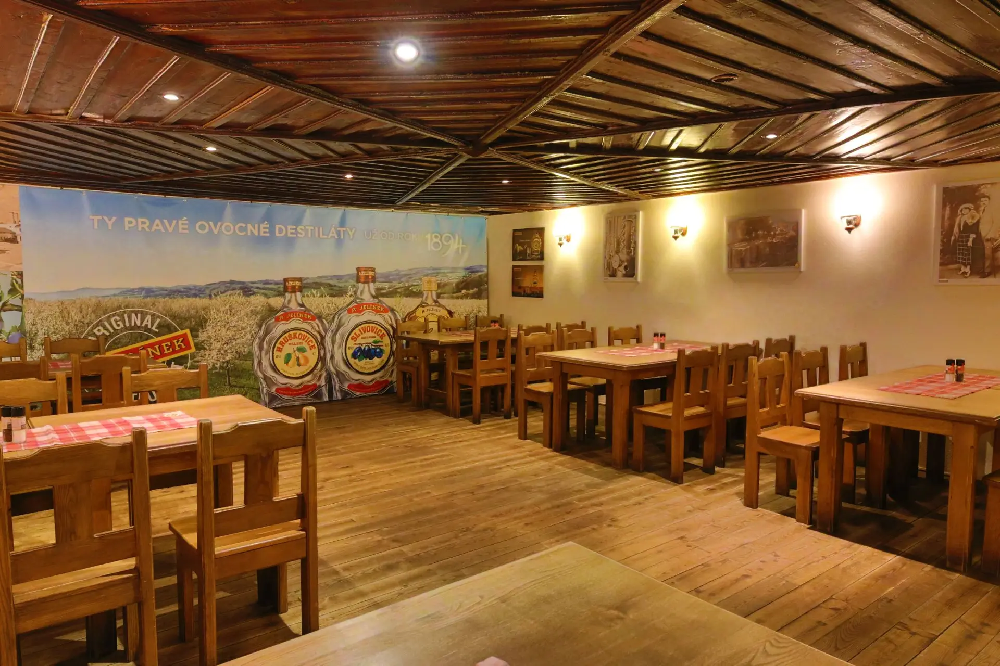

O nás
Naší restauraci Ventura Pub Evropák najdete v Karlových Varech přibližně 10 minut chůze od centra, směrem do Tuhnic. Jsme oblíbeným místem hlavně pro karlovaráky, kteří vyžadují péči a pozornost obsluhy, chutné a cenově přijatelné jídlo, tankové pivo, co má pořádný říz, a v neposlední řadě příjemné prostředí.
Kapacita je 200 míst uvnitř restaurace a v letním období navíc 200 míst na terase. V našem sortimentu je zastoupena klasická česká kuchyně, hotová jídla, polední menu a navíc také pravidelná měsíční speciální nabídka našeho šéfkuchaře, výtečná pizza, zeleninové saláty a těstoviny.
